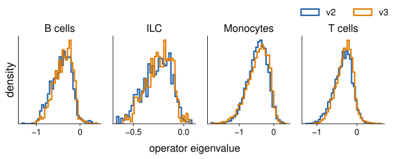
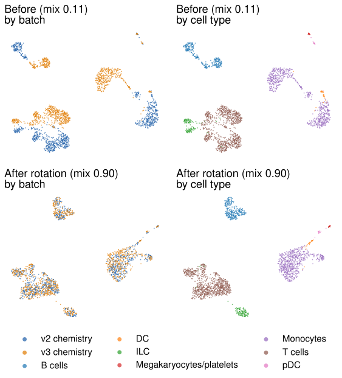

01The problem
Single-cell experiments run in batches (days, kits, chemistries). A batch shifts every cell's measurements, so one cell type lands in different places.
Common tools (Harmony, scVI) move cells until batches overlap. Because they cannot tell a batch shift from a biological one, they can also erase real biology.
02Hypothesis
Each cell state sits in a "well" of a learned landscape. The operator describes the well's shape.
arrows = drift
one well reshaped
mismatch = biology?
03The model
Cells at position z drift downhill on a landscape E learned from the data.
The curvature of the well around each cell: its shape and stiffness.
If only the frame changed, the operators match after rotating.
No cell pairing and no labels. Then every cell moves: z ↦ Q̂z.
≈ 1: as similar as refitting the same data. Clearly above 1 in one well: candidate biology.
04Data & design
- Public 10x Genomics PBMC data, one donor: purely technical batches (v2 vs v3 chemistry; random halves of one run).
- Coordinates: 30-d PCA. Cell types: CellTypist.
- Every test pre-registered: thresholds fixed before running.
Mixing: share of neighbours from the other batch (1 = fully mixed). Silhouette: how well cell types stay apart.
05Result 1 · Operators are reproducible
Refitting, or fitting on matched cells from another batch, changes operators by about as much as refitting noise (ratio ≈ 0.8–1.5).

Fig. 1 · Operator eigenvalues in v2 and v3 cells, by cell type (K2).
06Result 2 · Aligned batches share operators
Rotating v2 into v3's frame with the reference rotation (from gene loadings), operators agree within refit noise: frame ratio 1.09 (repeat: 1.20). Mixing rose 0.11 → 0.90.

Fig. 2 · UMAP before and after the reference rotation, by batch and by cell type (T02c).
07Result 3 · Alignment from operators alone
The core of scOPAlign: estimate Q̂ from drift and operators only (equation 4).

Fig. 3 · No rotation · scOPAlign estimate · known answer (O1b).
- Cells align: mixing 0.81, frame ratio 1.22.
- The exact known rotation is not yet recovered (error ≈ 0.6; target ≤ 0.10).
- Curvature alone finds the axes but not their signs; adding drift fixes the signs.
- Operators fix the high-variance directions well and low-variance ones poorly. Next fix: restrict Q to the informative directions.
08How it compares
| Method | Mix ↑ | Sil ↑ | Frame ↓ |
|---|---|---|---|
| Harmony | 1.00 | 0.447 | 1.35 |
| Reference rotation* | 0.90 | 0.421 | 1.55 |
On this purely technical pair Harmony mixes better. *The gene-loading rotation of Result 2, which scOPAlign aims to recover from operators alone (Result 3). The real test needs biology to preserve (10).
09Road to the test
10Next: the real test
A simulation where we know the batch effect and the biology: one cell state is reshaped in one batch only. Which method keeps that difference: Harmony, scVI, gene-level rotation, or scOPAlign?
11Conclusions
- Cell-state operators are stable enough to align batches with.
- Operator-only alignment works for cells but is not yet exact.
- Limits: one donor, technical batches, 30-d PCA. No claim yet that biology is preserved better.